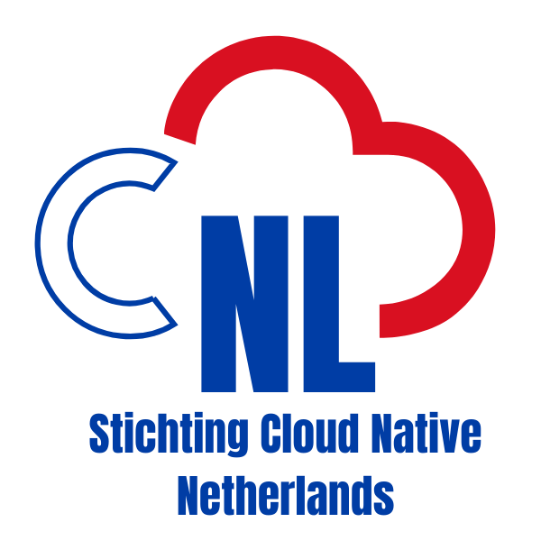

Our mission is promoting Open Source software in the Netherlands by organizing events and activities around these technologies.
Stichting Cloud Native Netherlands is a foundation incorporated and registered in the Dutch Chamber of Commerce (KVK). Founded on 24 December 2024. It is composed of a supervisory board and 3 board members.
The formation of the foundation represents the continuation of a long effort on community building that goes on since the first meetup in 2016; besides the regular monthly events and the community growing to more than 4000 members, the organization of 3 Kubernetes Community Days represents important milestones and stands for the health of the Dutch Cloud Native community.
We collaborate closely with the Cloud Native Computing Foundation (CNCF), the global organization dedicated to bringing together the world’s top developers, end users, and vendors and run the largest open source developer conferences.
Many of the foundation members are CNCF ambassadors or cover other roles in the Kubernetes and Cloud Native community ecosystem at large.